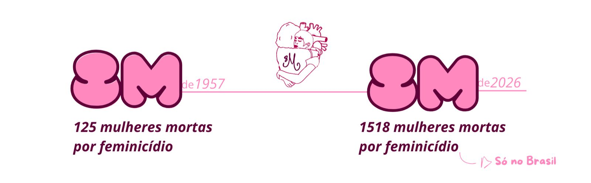

8 Mil Mulheres
O manifesto 8 M, nosso nome remete tanto a o dia oito de março, dia internacional das mulheres, como a oito mil mulheres que morrem por feminicídio a cada um minuto e 36 segundos. No dia 8 março de 1957 cerca de 125 mulheres que lutavam por igualdade foram queimadas vivas por homens que não eram capazes de aceitar uma mulher conquistando o que era seu por direito. Passaram-se 68 anos desde que a sociedade abriu os olhos diante daquele femincídio em massa, porém, a realidade atual não está tão distante da de 1957:

No dia internacional das mulheres de 2026, o Brasil registrou 1.518 feminicídio! um aumento de forma alarmante em relação aos anos anteriores. Isso é apenas um exemplo dos milhares de caso de feminicídio que acontece por ano ao redor do mundo! Atraves desse cenário exposto, onde o lugar mais perigoso para uma mulher atualmente está sendo o seu lar. O manifesto 8M não é capaz de permanecer em silêncio, não é capaz de deixar mulheres serem silênciadas! Apartir de denúncias públicas e anônimas o 8M fará sua parte, juntamente claro com seu apoio: